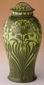

|  | Gustavsberg Porcelain Factory Värmdö, Sweden Jar with Cover 1899 Glazed porcelain Designed by Josef Ekberg 1877-1945 22-3/4 inches high, 13 inches in diameter Gift of the Decorative Arts Council and Daniel Morris and Denis Gallion, Historical Design Collection, New York 94.35a,b |
The raised floral decoration on this jar represents a STYLIZED plant similar to allium. Long-stemmed blossoms and nodules reduced to simplified shapes spread over the swelling shoulder and the top of the lid, while long, intertwined leaves dance around the jar's body. The design is characteristic of Art Nouveau, which was brought to Sweden in 1897 and remained popular until about 1905. This movement took its inspiration from graceful plant and animal forms. In Sweden, NATIONALIST pride prompted the use of designs based on native flora and fauna.
Art Nouveau's emphasis on nature was a reaction to the problems of the city--crowded housing, air pollution, increased commercialism- -which caused people to long for a simpler, pastoral time. Romantic themes based on nostalgia for the past and the pleasures of the countryside characterized the art and literature of the period. Further inspiration came from Japanese prints that incorporated natural forms and landscape. These prints became the rage in fashionable society after U.S. Commodore Matthew Perry visited Japan in 1854 and trade treaties were signed that brought Japanese goods to the West.
Art Nouveau also grew out of an interest in new scientific discoveries, illustrated scientific books, and biological research such as Darwin's study of evolution, published in The Origin of Species in 1859. Artists saw the vigorous growth and attractive movement of plants as themes, not merely ORNAMENTAL effects. Plant shapes, easily transformed and abstracted, could symbolically "break through" old methods of design.2
Art Nouveau found expression in designs for furniture, jewelry, architecture, even subway stations in Paris. It represented what was new and modern in an effort to reject Old World historical styles. It has been called "the first movement to recognize the demands of the modern world," whose goal was to "achieve harmony between the object and its decoration."3
Notes
2. Siegrid Wichmann, Jugendstil Art Nouveau: Floral and Functional Forms, trans. Michael Heron (Boston: Little, Brown and Company, 1984; originally published in German, 1984), p. 11.
3. Maurice Rheims, The Flowering of Art Nouveau, trans. Patrick Evans (New York, Harry N. Abrams, 1966; originally published in French, 1900), p. 11.

Key ideas.
Where does it come from?
What does it look like?
How was it used?
How was it made?
Discussion questions.
Additional resources.
Select another piece.